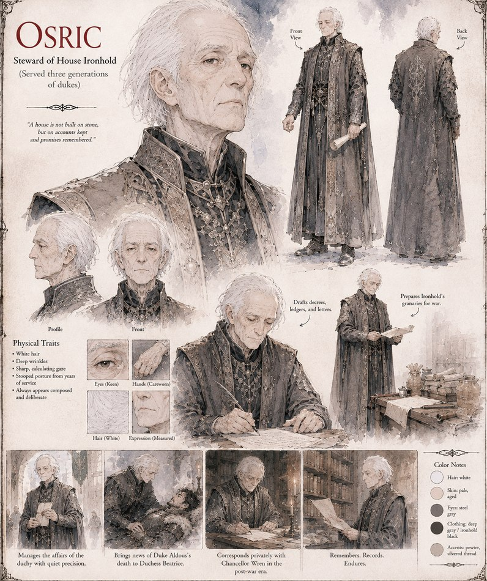

Osric
Steward of House Ironhold · served three generations of dukes
Steward of House Ironhold, composed and deliberate after decades in service to the family. He manages the duchy's affairs with quiet precision, is the one who carries news of Duke Aldous's death to Duchess Beatrice, and corresponds privately with Chancellor Wren through the years the two crowns spend under one regency afterward. When Beatrice's grief curdles into self-blame, he's steady enough to push back on it.
“A house is not built on stone, but on accounts kept and promises remembered.”